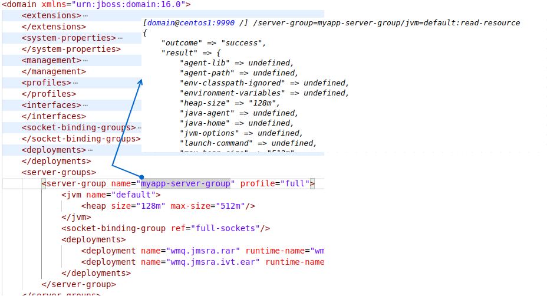
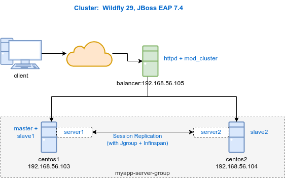
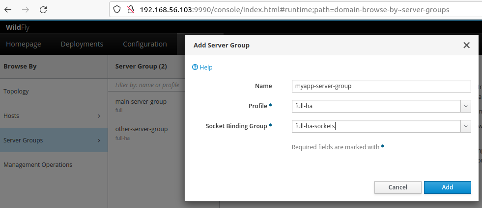
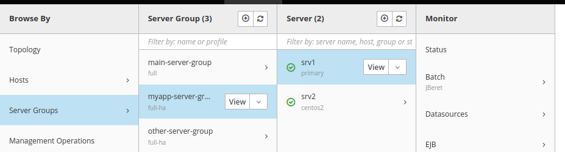

⚠️ These notes are based on Jboss EAP 7.4 and Wildfly 29
Table Of Contents
- QuickStart
- Domain Setup
- Application deployment
- Configuration
- CLI
- Monitoring
- Performance Tuning
- Security
- High Availability
- Miscs
- Common Errors
1. QuickStart
Domain Architecture

Standalone
Start/Stop: Standalone Mode
./standalone.sh -b 192.168.56.103 -bmanagement 192.168.56.103
./jboss-cli.sh --user=jbossadmin --password=Changeit2!
--connect --controller=$HOST:9990 command=:shutdown
Console:
http://HOST:9990/console
Users
Add Management/Application Users
./add-user.sh
Change Console Password: Enter the username you want to change the password
./add-user.sh
Domain
Start/Stop Domain Controller:
$ ./domain.sh -bmanagement 192.168.56.103 --host-config=host-master.xml
CLI:
/host=master:shutdown
Start/Stop Host Controller:
$ ./domain.sh -Djboss.domain.master.address=192.168.56.103 -b 192.168.56.104 --host-config=host-slave.xml
CLI:
/host=SLAVE_NAME:shutdown
Start/Stop Servers
[domain@centos1:9990 /] /host=centos2/server=server-one:start
Others Operations: stop, restart, reload, read-operation-names
CLI : Memos
$ ./jboss-cli.sh --controller=centos1:9990 --connect
CLIs:
# Start all servers of a Group
/server-group=myapp-server-group:start-servers
# Change jvm heap size of a group
/server-group=myapp-server-group/jvm=default:write-attribute(name=heap-size, value=128m)
2. Domain Setup
A Domain consists of a domain controller, host controllers, server groups per host.
A server group is a set of server instances, and are managed and configured as one. each server in a group shares the same configuration and deplyments.
Domain controller is the central process controlling the managed domain.
Host Controller is launched when ./domain.sh is run on a host.
This config example, we have hosts:
- centos1(192.168.56.103) : domain controller host(master).
- centos2(192.168.56.104) : slave server host.
Domain Controller Configuration
Host : centos1(192.168.56.103)
Do steps 1-3 in host-master.xml :
-
Choose a logical name of The domain controller: I choose a name master
<host xmlns="urn:jboss:domain:16.0" name="master"> -
a host acts as domain controller via domain-controller declaration
<domain-controller> <local/> </domain-controller> -
Management Inteface:
<interface name="management"> <inet-address value="${jboss.bind.address.management:192.168.56.103}"/> </interface>Or via domain.sh argument : -bmanagement 192.168.56.103
-
On the domain controller, create a new user(by add-user.sh) that can be used by slave host(centos2) controllers to connect on the domain controller. I create a user/slave named centos2.
-
Start The Master
./domain.sh -bmanagement 192.168.56.103 --host-config=host-master.xml
Host Controller Configuration
Host: centos2(192.168.56.104)
To join a domain, a host controller configuration require 3 steps:
Do steps 1-3 in host-slave.xml:
- the logical host name needs to be distinct
<host xmlns="urn:jboss:domain:16.0" name='centos2'> -
Slave needs to know the password of the domain management user:
Use the hashed password previousely created in the domain controller:
<security-realm name="ManagementRealm"> <server-identities> <secret value="Y2hhbmdlaXQ="/> </server-identities> -
the Host Controller needs to now the Domain Controller name and IP.
<domain-controller> .... <static-discovery name="master" protocol="${jboss.domain.master.protocol:remote+http}" host="${jboss.domain.master.address}" port="${jboss.domain.master.port:9990}"/> -
Start The Slave:
./domain.sh -Djboss.domain.master.address=192.168.56.103 -b 192.168.56.104 --host-config=host-slave.xml
How To Start Master and Slave on the same Machine
This is necessary if you want to create server instances on the Machine running the Maser.
⚠️ This is not recommanded!. The domain controller should be on a separated server.
Domain Controller:
[centos1]$ ./domain.sh -bmanagement 192.168.56.103 --host-config=host-master.xml
Host Controller:
[centos1]$ ./domain.sh -Djboss.domain.master.address=192.168.56.103 -b 192.168.56.103 --host-config=host-slave.xml
https://www.dbi-services.com/blog/jboss-eap-7-domain-configuration/
3. Application deployment
Managed Domain
Deploy/Undeploy.
[domain@centos1:9990 /] deploy --server-groups=myapp-server-group /opt/helloworld-jboss.war
[domain@centos1:9990 /] undeploy --server-groups=myapp-server-group helloworld-jboss.war
Deployment Status:
[domain@centos1:9990 /] /server-group=myapp-server-group/deployment=helloworld-jboss.war:read-resource
Standalone server
[standalone@centos1:9990 /] deploy /opt/jboss-as-helloworld.war
[standalone@centos1:9990 /] undeploy jboss-as-helloworld.war
4. Configuration
4.1 Doamin Configuration Files
- domain.xml
- Contains servers settings, profiles, subsystems, deplyments…
- Parsed by domain controller(master), but not by slave hosts controllers. A slave host controller gets its configurations from the remote domain controller when it registers with it.
-
host-master.xml
It specifies that a host controller should become a domain controller(Master). No servers will be started by the domain controller(recommended in Production).$ bin/domain.sh –host-config=host-master.xml
-
host-slave.xml
It specifies that a host controller should become a Secondary host controller(Slave). It should register with a remote domain controller. This configurartion specifies how many servers to launch, and what server groups they belong to.$ bin/domain.sh –host-config=host-slave.xml
- host.xml
Don’t use it, use the two above config files.
4.2 Standalone Configuration Files
- standalone.xml
- ports: http/8080, management/9990.
- port-offset: default 0. for example, port-offset=100 gives http port 8180 et console 10090.
- standalone-ha.xml
use this configuration to have clustering.
Run the standalone with a specefic config file
./standalone.sh -c standalone-ha.xml
4.3 Modules
-
Add a Module with CLI
./jboss-cli.sh --controller=centos1:9990 --connect module add --name=org.postgresql --resources=~/postgresql-42.6.0.jar --dependencies=javax.api,javax.transaction.api
The jar is copied into modules/org/postgresql/main/
-
Remove a Module
module remove --name=org.postgresql
4.4 JDBC Driver
Add a JDBC Driver as a Module(Recommended) using CLI:
module add --name=org.postgresql --resources=~/postgresql-42.6.0.jar
--dependencies=javax.api,javax.transaction.api
/subsystem=datasources/jdbc-driver=postgres:add(driver-name=postgres,
driver-module-name=org.postgresql,
driver-class-name=org.postgresql.Driver)
4.5 Data Sources
Using Console, Easy. You can Test It!
Using CLI
data-source add --name=PostgresDS --jndi-name=java:/PostgresDS
--driver-name=postgres --connection-url=jdbc:postgresql://localhost:5432/postgresdb
--user-name=admin --password=admin
reload
Test a DataSource
/subsystem=datasources/data-source=PostgresDS:test-connection-in-pool
Remove a Data source
data-source remove --name=PostgresDS
reload
4.6 Logging
logging.properties : This is logging configuration is used when the server boots up until the logging subsystem kicks in.
Standalone Server
./standalone/log/server.log
4.7 Resource Adapters
Steps to declare a new resource adapter:
-
Deploy the .rar archive Obtain wmq.jmsra.rar in /opt/mqm/java/lib/jca/wmq.jmsra.rar
CLI: deploy --server-groups=myapp-server-group /opt/mqm/java/lib/jca/wmq.jmsra.rar -
Add the resource adapter
CLI: /profile=full/subsystem=resource-adapters/resource-adapter=wmq.jmsra.rar:add(archive=wmq.jmsra.rar, transaction-support=XATransaction) -
Configure IBM MQ Adapter
-
Deploy JMS Test Application(find it in ibm mq installation directory)
deploy --server-groups=myapp-server-group /opt/mqm/java/lib/jca/wmq.jmsra.ivt.ear -
Test
5. CLI
https://octopus.com/blog/using-the-wildfly-cli
http://www.jtips.info/WildFly/CLI
Intéractive mode
./jboss-cli.sh -c --controller=centos1:9990
non-interactive mode:
./jboss-cli.sh -u=jboss -p=pass123 -c --controller=localhost:9990 --commands="cd /core-service,ls"
There are two types to interact with the management interface:
- High Level Commands
- Low Level Operation Requests
5.1 Commands
High level interactive mode with management interface.
[domain@centos1:9990 /] help --commands
deployment-info batch deploy deployment-info deploy-file undeploy cd shutdown connect
data-source xa-data-source reload quit info ...
5.2 Operation Requests
Low level interactive mode with management interface.
An Operation request basiquely consists of three parts: address, operation name, and parameters:
[/node-type=node-name(/node-type=node-name)*]:operation-name [([(param-name=param-value)*])]
For example:
/profile=full/subsystem=logging/root-logger=ROOT:write-attribute(name=level, value=INFO)
5.3 TAB Completion
Very very useful.
5.4 Main Operations
read-operation-names : List all available operations on a node
[domain@centos1:9990 /] /host=centos2/server=server-one:read-operation-names
....
"read-children-names",
"read-children-resources",
"read-operation-names",
"read-resource",
"read-resource-description",
"start",
"kill",
"stop",
"write-attribute"
read-resource: Display attributes/values of a resource
[domain@centos1:9990 /] /server-group=main-server-group:read-resource
{
"profile" => "full",
"socket-binding-default-interface" => undefined,
"socket-binding-port-offset" => 0,
"deployment" => {"jboss-as-helloworld.war" => undefined},
write-attribute : Modify an attribute value.
[domain@centos1:9990 /] /server-group=main-server-group:write-attribute(name=socket-binding-port-offset, value=100)
5.5 Commands Standalone
TODO
5.6 Commands in Domain
-
Subsystems and Profiles
The main diffence with the standalone, is that subsystems are not located in the root, but in a Profile.[domain@centos1:9990 /] /profile=full/subsystem=datasources/data-source=ExampleDS:read-resource -
Start/Stop a Server
[domain@centos1:9990 /] /host=centos2/server=server-one:start Others Operations: stop, restart, reload, read-operation-names
5.7 domain.xml and CLI

6. Monitoring
Metrics
/extension=org.wildfly.extension.metrics:add
/profile=full/subsystem=metrics:add
/profile=full/subsystem=metrics:read-resource { “outcome” => “success”, “result” => { “exposed-subsystems” => undefined, “prefix” => undefined, “security-enabled” => true }
http://192.168.56.103:9990/metrics
Health
/extension=org.wildfly.extension.health:add
/profile=full/subsystem=health:add
7. Performance Tuning
7.1 JVM Settings
Domain
JVM setting can be defined on different scope: For a Server Group, for a host, or for a specific server.
⚠️ Below configurations should be done on the Console > Runtime
- JVM Setting for a Server Group: domain.xml
All servers of this group inherit these settings.<server-group name="myapp-server-goup" profile="full"> <jvm name="default"> <heap size="128m" max-size="512m"/> </jvm> - JVM Setting for a host: host-slave.xml
These settings will be used if no setting are defined for the server group and for the server.<jvms> <jvm name="default"> <heap size="64m" max-size="256m"/> - JVM Setting for a specific server: host-slave.xml
If defined, these settings have priority.<server name="srv1" group="myapp-server-goup" auto-start="false"> <jvm name="default"> <heap size="128m" max-size="512m"/>
Standalone : standalone.conf
JAVA_OPTS="-Xms1024m -Xmx1024m -XX:MetaspaceSize=96M -XX:MaxMetaspaceSize=256m
7.2 JConsole
:exclamation: Don’t use JDK Jconsole, use EAP_HOME/bin/jconsole.sh
Standalone:
-
Enable JMX Remoting connector:
Console : Configuration ⇒ Subsystems/Subsystem ⇒ JMX ⇒ remoting-connector: jmx
-
EAP_HOME/bin/jconsole.sh
service:jmx:http-remoting-jmx://192.168.57.103:9990
7.3 VisualVM
Todo
8. Security
RBAC
RBAC i an access control provider that gives you the possiblity to map users and groups to roles(administrator, Monitor,etc). The Default “simple” access control don’t permit that.
Before Activating RBAC, Give Administrator authorization to admin user, else the console will be no longer accessible by this user :
/core-service=management/access=authorization/role-mapping=Administrator:add
/core-service=management/access=authorization/role-mapping=Administrator/include=user-jbossadmin:add(name=jbossadmin,type=USER)
RBAC roles:
- Administrator
- Monitor
- Deployer
- Maintainer
- etc
Switching To the RBAC Provider:
/core-service=management/access=authorization:write-attribute(name=provider,value=rbac)
reload
Create Users:
Use Console : Heading ‘Access Control’. Password is named Realm.
Legacy Authentication
Deprecated. No longer supported from Wildfly 25.
Elytron
9. High Availability
High availability can be guaranted by Load Balancing or Failover.
Cluster is made available by jgroup, infinspan and modcluster subsystems. ha and full-ha profiles enable these subsystems.
Cluster
Environment: Wildfly 29, Centos 7

⚠️ NOT recommended to set up domain controller and host controller on the same machine/vm.
-
Interface config on the Primary Host Controller
host.xml : Master Host. IP 192.168.56.103
$ cp host-primary.xml host.xml<host xmlns="urn:jboss:domain:20.0" name="primary"><domain-controller> <local/> </domain-controller><interfaces> <interface name="management"> <inet-address value="${jboss.bind.address.management:192.168.56.103}"/> </interface> <interface name="public"> <inet-address value="${jboss.bind.address:192.168.56.103}"/> </interface> </interfaces>On the primary host: with add-user.sh create a user centos2 so that secondary host controller can be authenticated on the primary host controller.
-
Interface config on the Secondary Host Controller
host.xml : Secondary Host. IP centos2/192.168.56.104
$ cp host-secondary.xml host.xml<host xmlns="urn:jboss:domain:20.0" name='centos2'><domain-controller> <remote> <discovery-options> <static-discovery name="primary" protocol="remote+http" host="192.168.56.103" port="9990"/> </discovery-options> </remote> </domain-controller><interfaces> <interface name="management"> <inet-address value="${jboss.bind.address.management:192.168.56.104}"/> </interface> <interface name="public"> <inet-address value="${jboss.bind.address:192.168.56.104}"/> </interface> </interfaces>Authentication(Legacy): no longer supported from Wildfly 25!
Authentication(Elytron): host.xml.
<subsystem xmlns="urn:wildfly:elytron:18.0" final-providers="combined-providers" disallowed-providers="OracleUcrypto"> <authentication-client> <authentication-configuration sasl-mechanism-selector="DIGEST-MD5" name="hostAuthConfig" authentication-name="centos2" realm="ManagementRealm"> <credential-reference clear-text="changeit"/> </authentication-configuration> <authentication-context name="hcAuthContext"> <match-rule authentication-configuration="hostAuthConfig"/> </authentication-context> </authentication-client> ...<domain-controller> <remote protocol="remote+http" host="192.168.56.103" port="9990" username="centos2" authentication-context="hcAuthContext"/> </domain-controller>Mask the Password(Elytron):
$ bin/elytron-tool.sh mask --salt 12345678 --iteration 256 --secret changeit MASK-2pr2SIUwzZyLvedad/aMuC;12345678;256<subsystem xmlns="urn:wildfly:elytron:18.0" final-providers="combined-providers" disallowed-providers="OracleUcrypto"> <authentication-client> <authentication-configuration sasl-mechanism-selector="DIGEST-MD5" name="hostAuthConfig" authentication-name="centos2" realm="ManagementRealm"> <credential-reference clear-text="MASK-2pr2SIUwzZyLvedad/aMuC;12345678;256"/> -
Create a server group with HA capabilities

Create Instances:

```xml
```
```xml
```
Failover
10. Miscs
Jboss EAP, Wildfly and JBoss AS Versions
| JBoss EAP | Wildfly | JBoss AS (Old) |
|---|---|---|
| 8.0 Beta | 27 | - |
| 7.4 | 23 | - |
| 7.3 | 18 | - |
| 7.0 | 10 | - |
| 6.4 | - | 7.5 |
| 6.0 | - | 7.1 |
| 5.x | - | 5.y |
| 4.x | - | 4.y |
11. Common Errors
Fatal Boot Error: Domain cannot start
Start the the domain controller in ADMIN-ONLY mode and correct the error
./domain.sh --admin-only ...
12. References
- https://www.jtips.info/WildFly